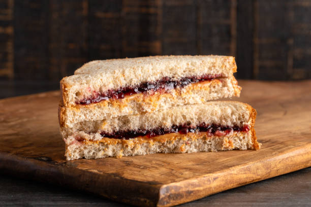

PB&J

Description
A peanut butter and jelly (PB&J) sandwich is a treat made with peanut butter and fruit preserves, like jelly, spread on bread
Ingredients
- 2 teaspoons butter
- 2 slices white bread
- 2 teaspoons any flavor fruit jelly
- 1 teaspoon peanut butter
Steps
- Gather all ingredients.
- Heat a griddle or skillet to 350 degrees F (175 degrees C).
- Spread butter on one side of each slice of bread. Spread jelly on the unbuttered side of one slice of bread; spread peanut butter on the other unbuttered side.
- Place bread slices together, so peanut butter and jelly are in the middle.
- Cook on the preheated griddle until golden brown and heated through, about 4 minutes per side.